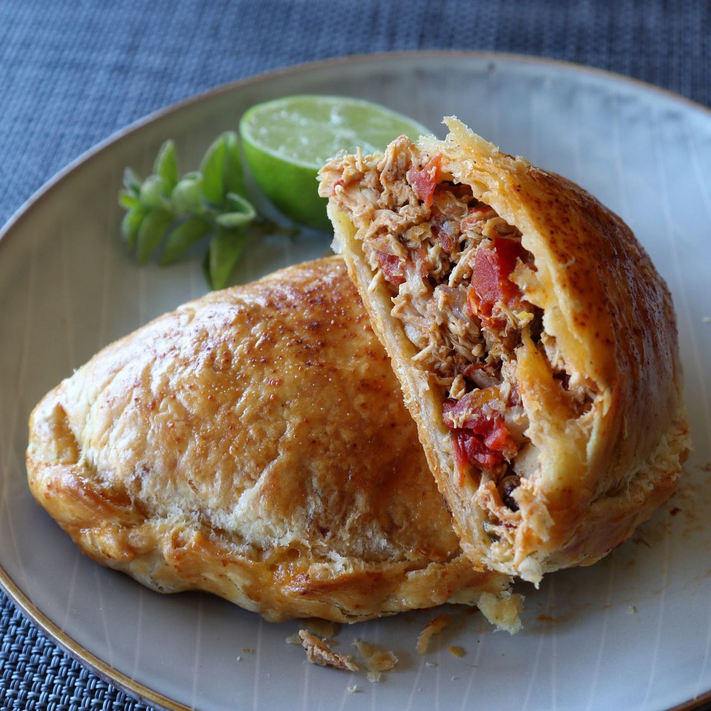

Chicken Empanadas

Description
A meat-filled pastry
Ingredients
For the Filling:
- 2 tablespoons olive oil
- 1 yellow onion, diced
- 1/2 cup diced poblano pepper
- 4 cloves garlic, chopped
- 1 teaspoon kosher salt
- 1/2 teaspoon kosher salt
- 1 1/2 teaspoons ground dried chipotle pepper
- 1/2 teaspoon ground cumin
- 1/4 teaspoon dried Mexican oregano
- 1 pinch cayenne pepper, or to taste
- 3 cups diced cooked chicken
- 2 tablespoons dried currants
- 2 (10 ounce) cans diced tomatoes with green chile peppers
- 1/3 cup water
- 3/4 cup grated pepper Jack cheese (Optional)
- 1 large egg, beaten
- 2 teaspoons water
For the Dough:
- 3 cups all-purpose flour
- 1 1.2 teaspoons kosher salt
- 1 teaspoon white sugar
- 12 tablespoons cold unsalted butter
- 1 large egg, beaten
- 1.3 cup cold water, or as needed
Steps
- Pout olive oil into a saucepan; add onion, poblano, garlic, salt, pepper, chipotle, cumin, oregano, cayenne, and cooked chicken, pressing down as you got. Add currants.
- Place saucepan over high heat; cook until onions begin to soften slightly, about 3 minutes. Stir in diced tomatoes with green chiles. Pour in 1/3 cup water and mix to combine.
- Bring mixture to a simmer; reduce heat to medium and cook, stirring occasionally, until liquids are cooked down, 30 to 45 minutes.
- Remove from heat and let cool to room temperature, about 30 minutes. Chill thoroughly before use, 1 to 2 hours.
- While filling simmers, combine flour, salt, and sugar for dough in a bowl with your hand. Grate in cold butter, pausing as needed to combine. Drizzle in beaten egg and water. Mix with a fork until it starts to form a shaggy dough.
- Use your hands to squeeze mixture into a lump of dough; transfer to a work surface and knead into a ball of dough, 10 to 15 seconds.
- Wrap doughh in plastic wrap and refrigerate for at least 1 hour, up to overnight.
- Preheat the oven to 400 degrees F (200 degrees C). Line a baking sheet with parchment paper.
- Unwrap chilled dough and transfer to a lightly floured work surface. Use a bench scraper to divide into 8 equal pieces.
- Roll each dough piece into an 8-inch circle.
- Drain any excess juice from filling. Top each dough circle with a rounded 1/2-cup measure of the chicken mixture. Sprinkle some pepper Jack cheese over top.
- Brush edges of each dough circle with a small amount of water to dampen; fold over and seal with fingertips, making sure to not trap in any pockets of air. Crimp using your fingertips or a fork.
- Combine beaten egg and 2 teaspoons water for egg wash. Transfer empanadas to the prepared baking sheet and brush over egg wash. Sprinkle with cayenne.
- Bake in the center of the preheated oven until browned and crispy on the edges, about 35 minutes. Transfer to a wire rack to cool for about 5 minutes before serving.